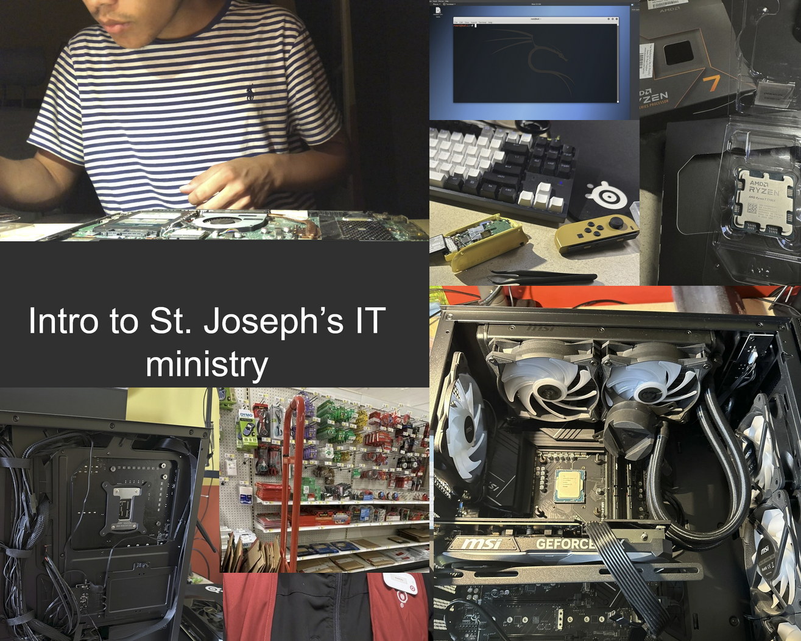
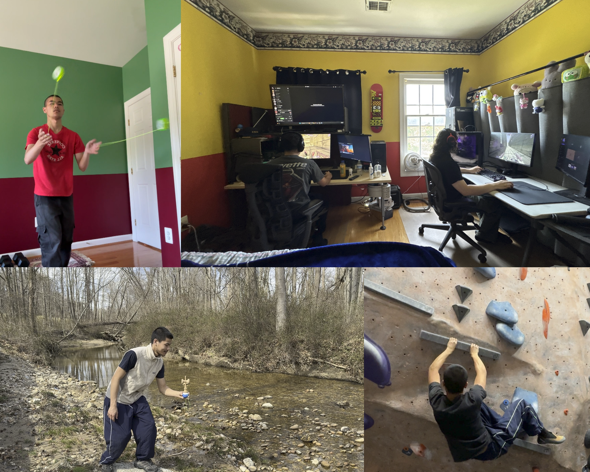

About Me
I'm Dennis Ho, an aspiring IT professional passionate about technical support, customer service, and building strong foundations in cybersecurity and cloud environments.
I have experience volunteering as IT support at my church, performing laptop and PC hardware upgrades, building a home lab for hands-on learning, and completing personal projects. Alongside my technical work, my previous jobs have strengthened my customer service and communication skills, helping me support users more effectively.

I love exploring new technology, building computers, and enhancing my knowledge about modern networks. Outside of tech, I enjoy rock climbing, yo-yoing, kendama, hiking, and curating my home office with Herman Miller furniture.
